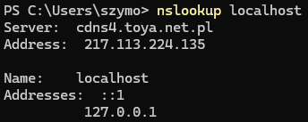
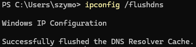

Theoretical Part
1.1 DNS System
1.1.1 List of Top-Level Domains
Top-Level Domains (TLDs) are the highest level in the DNS hierarchy. They include:
- Generic TLDs (gTLDs) - Examples: .com, .org, .net
- Country-Code TLDs (ccTLDs) - Examples: .pl, .uk
- Sponsored TLDs (sTLDs) - Example: .edu, .gov
1.1.2 Hierarchical Structure of Domain Name System (DNS)
The DNS hierarchy is structured from right to left, with each level serving a distinct purpose. The components include:
- Root - The highest level in the DNS, represented by a dot (`.`), though often omitted in domain names. It holds information about top-level domains (TLDs).
- Top-Level Domain (TLD) - The last part of a domain name, such as `.com`, `.org`, or `.edu`. TLDs can be generic (gTLDs), country-code (ccTLDs), or sponsored (sTLDs).
- Second-Level Domain (SLD) - The part of the domain directly below the TLD, e.g., "example" in `example.com`. It typically represents the organization or entity.
- Subdomains - Additional divisions within a domain, such as `blog.example.com`. They are used to organize different services or sections of a website.
- Host - The specific server or machine in the domain, such as `www` in `www.example.com`, responsible for serving content or services.
DNS Queries
A DNS query is a request to resolve a domain name into an IP address. The query is sent from a client to a DNS server and may pass through several servers to get the correct response.
DNS Delegation
DNS delegation involves a parent zone delegating authority to a nameserver for a subdomain. This allows different DNS servers to manage different parts of the DNS hierarchy.
1.1.3 DNS Records and Reverse DNS
DNS records store information about domain names. Common types include:
- A record - Maps a domain to an IP address.
- MX record - Specifies email servers.
- PTR record - Reverse DNS, maps IP to domain name.
- CNAME record - Alias for another domain name.
- TXT record - Stores text, often for verification.
1.1.4 Authoritative and Non-Authoritative Answers
An authoritative answer comes from a DNS server that holds the domain's records. A non-authoritative answer comes from a server that retrieved the data from another server or cache.
1.1.5 DNS Resolver, DNS Cache, File: /etc/hosts
A DNS resolver translates domain names to IP addresses. DNS cache stores previous lookups for faster
resolution. The file /etc/hosts maps domain names to IPs locally, bypassing DNS
queries.
1.2 Mail System
Protocols POP3, IMAP, SMTP
Email communication uses these protocols:
- POP3 - Downloads emails from the server, removing them.
- IMAP - Allows email management on the server, keeping it synchronized across devices.
- SMTP - Sends emails from client to server.
Email Protocols and Security
- NNTP (Network News Transfer Protocol): Used for reading and posting newsgroup messages.
- Email Mailbox: Stores messages.
- Parameters: Configure delivery of emails.
- Aliases: Identify alternative email addresses for a user.
- Email Address: Identifies the recipient of an email.
- Email Structure: Includes a header (sender, recipient, etc.) and a body, separated by a blank line.
- Attachments: Files sent with emails.
- Email Coding (MIME): MIME encodes and decodes non-text data, such as images or audio.
- Mailing Lists: Send emails to multiple recipients.
- Email Gate: Enables communication between different systems or networks.
- Email Security - SSL and TLS: Encrypt emails for secure transmission.
- PGP: Encrypts and signs emails for confidentiality and authenticity.
- Email Signature: Verifies the authenticity of the sender.
- Spam: Refers to unwanted or unsolicited emails.
- Blacklists: Contain known spam sources.
- Graylists: Temporarily delay suspicious emails to identify spam.
- Spam Filters: Detect and block unwanted emails based on patterns and behaviors.
Practical Part
2.1 DNS System
2.1.1 Display DNS Settings
To view DNS settings on your computer, use the Control Panel or the
ipconfig command in Command Prompt.
2.1.2 Using dig, host, nslookup
Find the following information using dig, host, and nslookup tools:
- 2.1.2.1: Domain names and corresponding IP addresses of computers in the
lodz.pldomain. - 2.1.2.2: Identify a computer located somewhere in Europe, outside Lodz, and gather all available DNS settings for this computer.
- 2.1.2.3: Identify a computer located outside Europe (e.g., in an exotic country) and gather all available DNS settings for this computer.
- 2.1.2.4: Verify DNS assignment for
localhost.

- 2.1.2.5: Flush DNS memory on your computer using the
ipconfig /flushdnscommand.

- 2.1.2.6: Modify the
hostsfile to redirectifeXX.comto display the websitemsn.com, whereXXis your IFE group number.

2.2 Mail System
2.2.1 Configure Thunderbird
Configure Thunderbird to send and receive emails from studife.it.p.lodz.pl.
2.2.2 Send Email to Invalid Servers
Send emails to a non-existent mail server, non-existent users, and a non-email server to observe error responses.
2.2.3 Analyze with Wireshark
Use Wireshark to analyze the process of sending and receiving emails through Thunderbird.
2.2.4 Send Email via Telnet
Send and receive emails using SMTP and POP3 through Telnet to interact with mail servers directly.